class: center, middle, title-slide # CSCI-UA 102 ## Data Structures <br> ## Binary Search Trees (BST) .author[ Instructor: Joanna Klukowska <br><br><br> ] .license[ Copyright 2020 Joanna Klukowska. Unless noted otherwise all content is released under a <br> [Creative Commons Attribution-ShareAlike 4.0 International License](https://creativecommons.org/licenses/by-sa/4.0/).<br> Background image by Stewart Weiss<br>] --- layout:true template: default name: section class: inverse, middle, center --- layout:true template: default name: breakout class: breakout, middle --- layout:true template:default name:slide class: slide .bottom-left[© Joanna Klukowska. CC-BY-SA.] --- template: section # Binary Search Tree (BST) Introduction --- template: slide ## BST .left-column2[ A binary search tree (BST) is a binary tree with additional properties: - the value stored in any node is greater than the values stored in its left child and all its descendants (or left subtree), and - the value stored in any node is smaller than the value stored in its right child and all its descendants (or its right subtree). ] -- .center[ <img width="350px" alt="BST - definition" src="img/11/bst-40.jpg"> .small[triangles are used to done subtrees, circles are used to denote nodes] ] -- .below-column2[.smaller[ <br/><br/><br/> __What about values equal to the one in a node? right or left?__ ]] -- .smaller[ - In many definitions of a BST, the duplicates are not allowed. - In the cases where duplicates are allowed, they need to be consistently placed in one or the other subtree for the entire tree. ] --- name:bst-examples ## BST Examples Is this a BST? --- template:bst-examples .center[ ] -- .center[.blue[.large[ ✓ ]]] --- template:bst-examples .center[ <img width="600px" alt="BST examples" src="img/11/bst-42.jpg"> ] -- .center[.blue[.large[ ✓ ]]] --- template:bst-examples .center[ ] -- .center[.red[.large[ ✗ ]]] --- template:bst-examples .center[ <img width="600px" alt="BST examples" src="img/11/bst-44.jpg"> ] -- .center[.blue[.large[ ✓ ]]] --- template:bst-examples .center[ 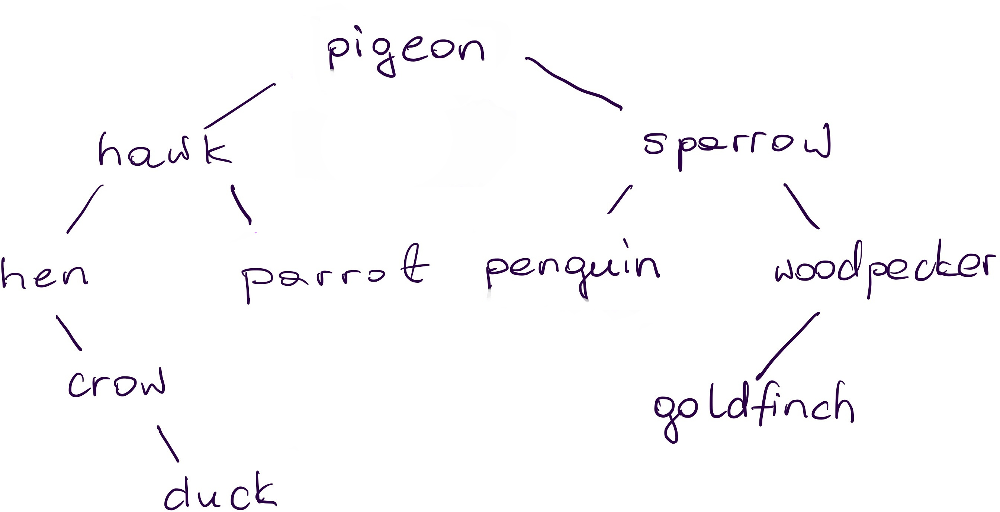 ] -- .center[.green[.large[ ? ]]] -- .center[If the ordering of values is alphabetical, then .red[.large[ ✗ ]]] -- .center[If the ordering of values is by number of characters with ties resolved alphabetically, then .blue[.large[ ✓ ]]] --- template:section # BST Node --- ## BST Node The node of a BST tree has a structure just like the binary tree node: -- .left-column2[ ``` class BSTNode { E data; BSTNode left; BSTNode right; //constructors //and methods as needed ... } ``` ] -- .below-column2[ ] <br/><br/> But Java generics also allow us to make sure that such a node (or later on the tree) can only be instantiated with types that can be compared (otherwise we cannot determine how the values should be placed in the tree). --- ## Generic BST class - take 1 .smaller[ ```java class BST < T extends Comparable <T> > { ... private class BSTNode { T data; BSTNode left; BSTNode right; public BSTNode ( T data ) { this.data = data; } public BSTNode (T data, BSTNode left, BSTNode right ) { this.data = data; this.left = left; this.right = right; } } ... } ``` ] - `T` in this definition serves exactly the same role as `E` - any letter will do, in fact - `T extends Comparable <T>` requires that the type used in the node will implement `Comparable<T>` interface (this is an extra requirement that we can add to a generic type) --- ## Generic BST class - take 2 .smaller[ ```java class BST < T extends Comparable <T> > { ... private class BSTNode implements Comparable < BSTNode > { T data; BSTNode left; BSTNode right; public BSTNode ( T data ) { this.data = data; } public BSTNode (T data, BSTNode left, BSTNode right ) { this.data = data; this.left = left; this.right = right; } public int compareTo ( BSTNode other ) { return this.data.compareTo ( other.data ); } } ... } ``` ] - we can make the node comparable by implementing `Comparable<BSTNode>` interface (this way we can compare nodes directly without having to _look_ at the data within them) --- template: section # Searching for an Item in a BST --- name:find ## `find` in a BST Looking for a value in a BST should remind us of looking for a value using a binary search algorithm for a sorted list: at every point we should be able to make a decision _to go left_ or _to go right_ - once we make that decision we never need to go back. --- template:find .center[ <img width="500px" alt="find in a BST" src="img/11/find-28.jpg"> ] --- template:find .center[ When we look for __58__, we'll first compare it to the value in the root of the tree: __55__. ] --- template:find .center[ Since 55 < 58, we know that the value we are looking for cannot be in the left subtree, so we eliminate that entire subtree and explore the right subtree by comparing 58 to its root: 78. ] --- template:find .center[ Since 78 > 58, we know that the value we are looking for cannot be in the right subtree, so we eliminate that entire subtree and explore the left subtree by comparing 58 to its root: 63. ] --- template:find .center[ 63 > 58, so we can eliminate the right subtree and explore the left subtree ... ] --- template:find .center[ 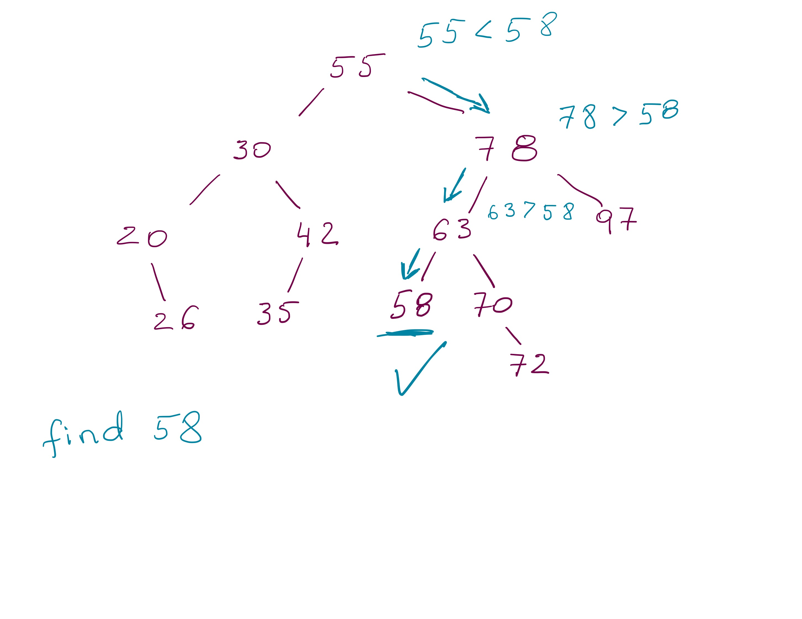 63 > 58, so we can eliminate the right subtree and explore the left subtree ...<br> whose root is the value that we were searching for. ] --- template:find .center[ ] .center80[ To look for __40__ we will follow a similar procedure: ] --- template:find .center[ ] .center80[ To look for __40__ we will follow a similar procedure: 55 > 40 implies move left, ] --- template:find .center[ ] .center80[ To look for __40__ we will follow a similar procedure: 55 > 40 implies move left, 30 < 40 implies move right, ] --- template:find .center[ ] .center80[ To look for __40__ we will follow a similar procedure: 55 > 40 implies move left, 30 < 40 implies move right, 42 > 40 implies move left, ] --- template:find .center[ ] .center80[ To look for __40__ we will follow a similar procedure: 55 > 40 implies move left, 30 < 40 implies move right, 42 > 40 implies move left, 35 < 40 implies move right, ] --- template:find .center[ ] .center80[ To look for __40__ we will follow a similar procedure: 55 > 40 implies move left, 30 < 40 implies move right, 42 > 40 implies move left, 35 < 40 implies move right, <br> and since there is nothing else to explore, we know __40 is not in this tree__. ] --- ## `find` in a BST - Pseudocode ``` boolean find ( T data ) { return find ( data, root ) } boolean find ( T data, BSTNode node ) if node == null return false else if ( data < node.data ) return find( data, node.data ) else if (data > node.data ) return find (data, node.data ) else return true ``` -- - What is the performance of this operation? -- **O(H)** where H is the height of the tree -- Since the height of the tree could be as much as N, i.e., H = O(N), the performance of this function could be as bad as linear, O(N) in the worst case. But stating it as O(H) gives us a more accurate description that applies to bast, average and worst case performance. --- template: section # Adding and Removing in a BST --- name:add ## `add` to a BST To add a new value to a BST we first find a location for it (using the same algorithm as `find`) and then we attach it at that location --- template:add .center[ ] --- template:add .center[ To add 13, we figure out that it should become the left child of 20. ] --- template:add .center[ To add 13, we figure out that it should become the left child of 20. ] --- template:add .center[ To add 65, we figure out that it should become the left child of 70. ] --- template:add .center[ To add 65, we figure out that it should become the left child of 70. ] -- .center[Could it also be a right child of 58? {{content}}] -- NO --- template:add .center[ To add 65, we figure out that it should become the right child of 97. ] --- template:add .center[ To add 65, we figure out that it should become the left child of 97. ] --- template:add .center[ To add 75, we figure out that it should become the right child of 72. ] --- template:add .center[ To add 75, we figure out that it should become the right child of 72. ] --- template:add .center[ .red[__Can you think of any value for which there are more than one possible location in the tree?__] ] -- .center[__There aren't any!__ The place for a new value is completely determined <br/>by the values that are currently in the tree. ] --- name:remove ## `remove` from a BST To remove a value from a BST we first find it in the tree (using the same algorithm as `find`) and then, if it exists, we detach it from the tree. --- template:remove .center[ 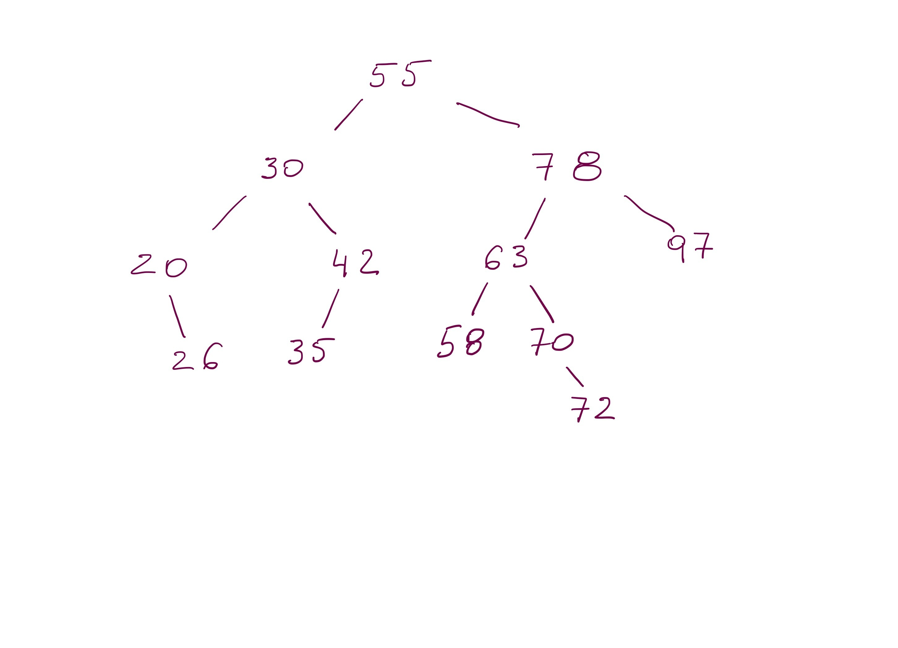 ] --- template:remove .center[ ] --- template:remove .center[ 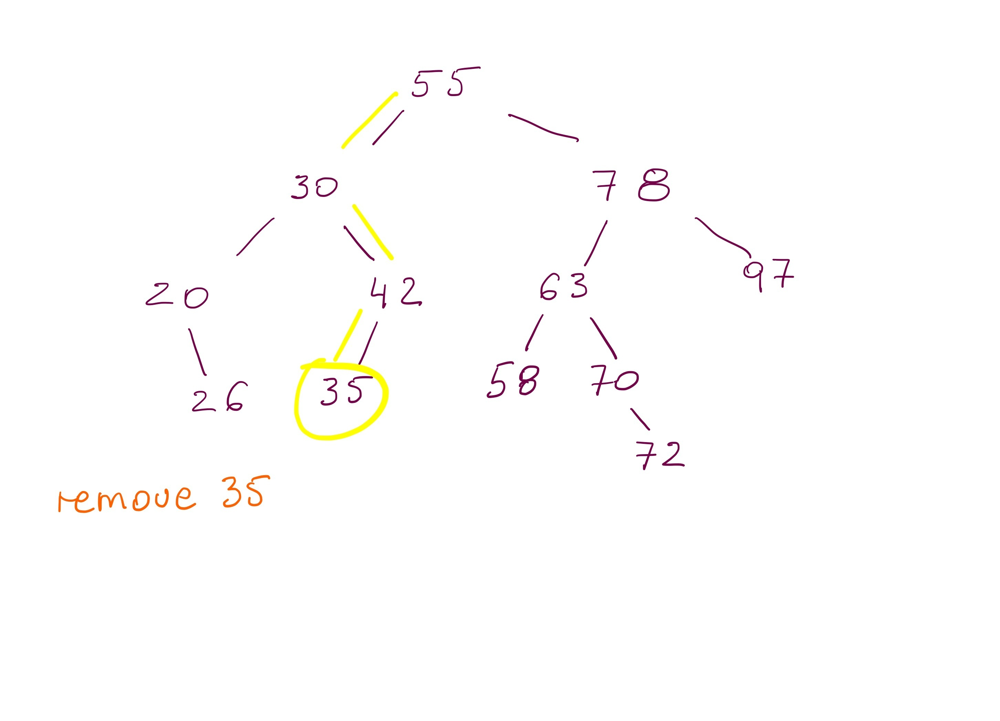 ] .center80[ To remove 35, we first locate it in the tree ] --- template:remove .center[ ] .center80[ To remove 35, we first locate it in the tree and then set the reference from its parent to `null` - effectively detaching it from the tree. ] --- template:remove .center[ 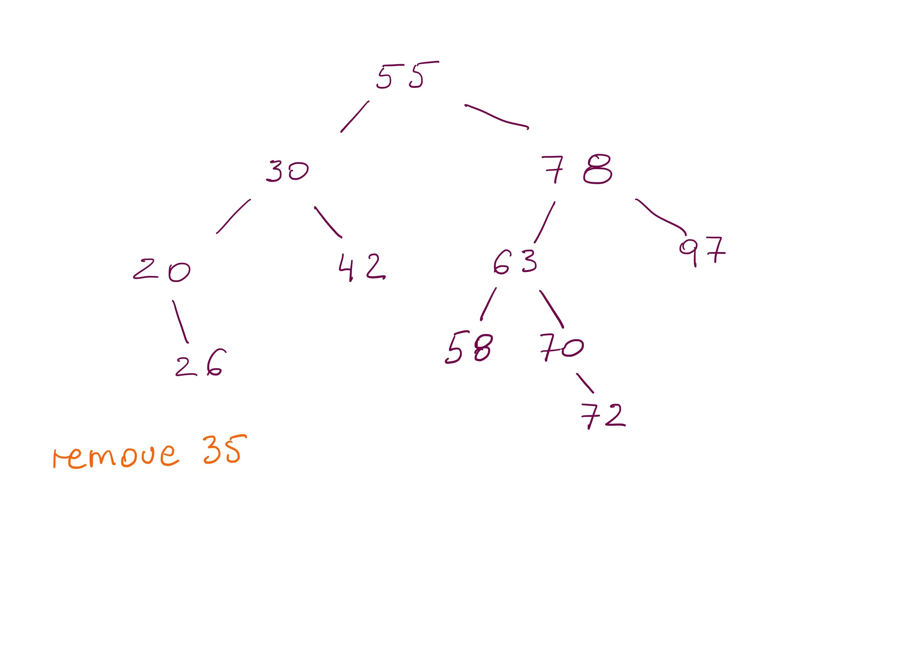 ] --- template:remove .center[ 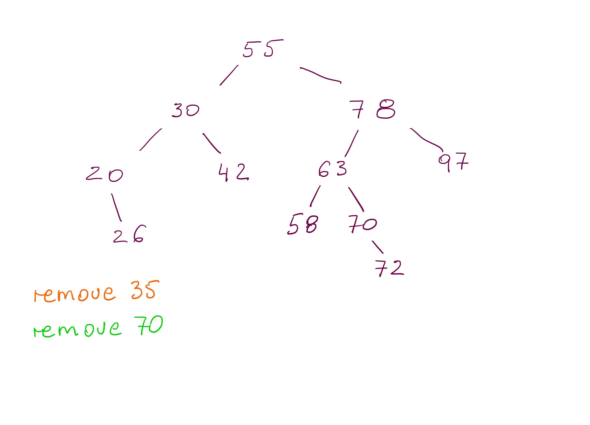 ] --- template:remove .center[ 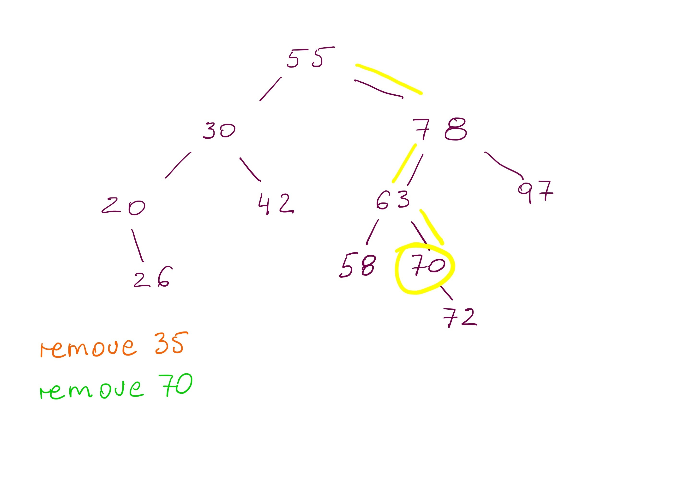 ] .center80[ To remove 70, we first locate it in the tree {{content}} ] -- (but we cannot just sets its parent's reference to null, because we would lose 72 in the process) --- template:remove .center[ ] .center80[ To remove 70, we first locate it in the tree and then set its parent's reference to point to 72. ] --- template:remove .center[ 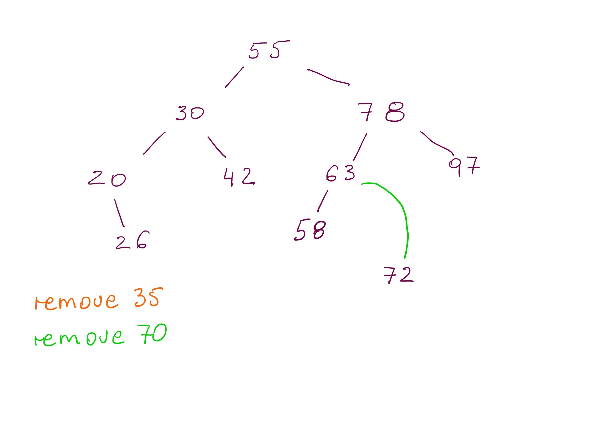 ] --- template:remove .center[ <img width="500px" alt="find in a BST" src="img/11/remove-20.jpg"> ] --- template:remove .center[ ] --- template:remove .center[ 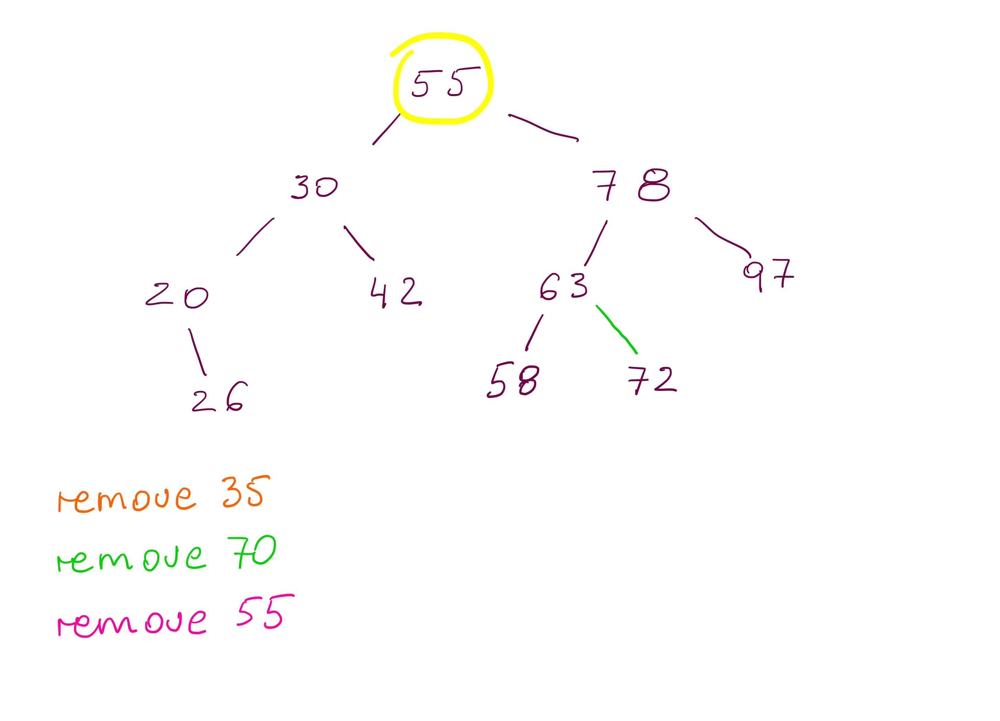 ] .center80[ To remove 55, we first locate it in the tree (that is easy) {{content}} ] -- but we cannot use any of the previous methods of setting the parent reference to null or to the child to 55, because 55 has two children nodes. --- template:remove .center[ ] .center80[ To remove 55, we first locate it in the tree (that is easy) and then __look for a value that could be used to be placed in that position without disturbing the order in the rest of the tree__. {{content}} ] -- It turns out there are two such values: 42 (55's inorder predecessor) and 58 (55's inorder successor). --- template:remove .center[ <img width="500px" alt="find in a BST" src="img/11/remove-24.jpg"> ] .center80[ To remove 55, we first locate it in the tree (that is easy) and then look for a value that could be used to be placed in that position without disturbing the order in the rest of the tree. To use 42, we replace the value of 55 with 42 and then __remove 42 from the left subtree__. ] --- template:remove .center[ ] .center80[ To remove 55, we first locate it in the tree (that is easy) and then look for a value that could be used to be placed in that position without disturbing the order in the rest of the tree. To use 42, we replace the value of 55 with 42 and then __remove 42 from the left subtree__. ] --- template:remove .center[ 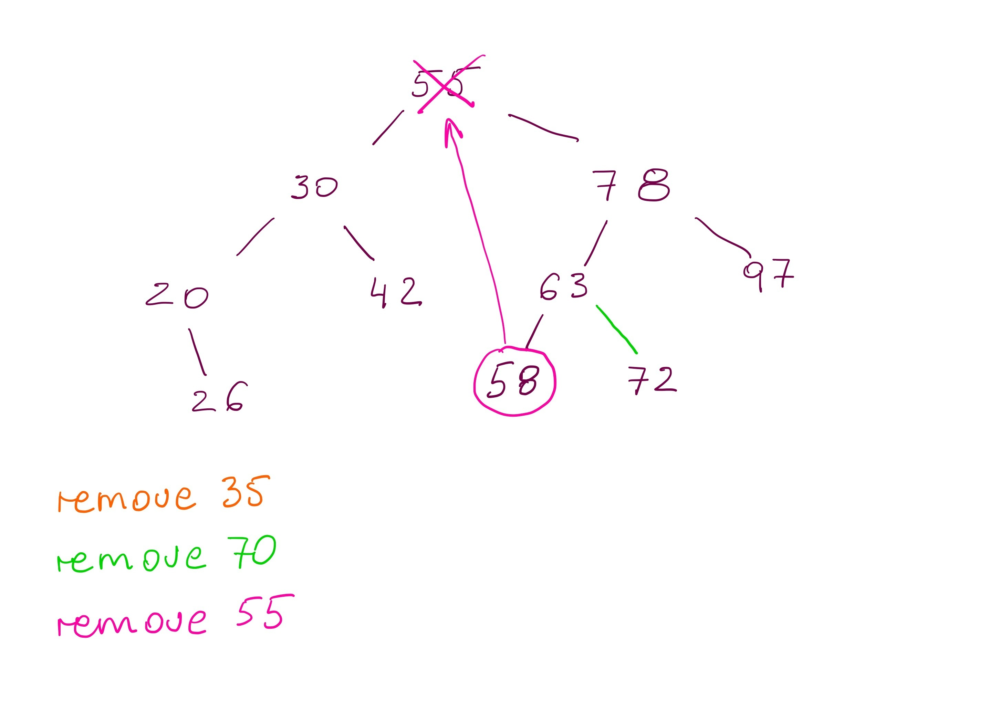 ] .center80[ To remove 55, we first locate it in the tree (that is easy) and then look for a value that could be used to be placed in that position without disturbing the order in the rest of the tree. To use 58, we replace the value of 55 with 58 and then __remove 58 from the right subtree__. ] --- template:remove .center[ 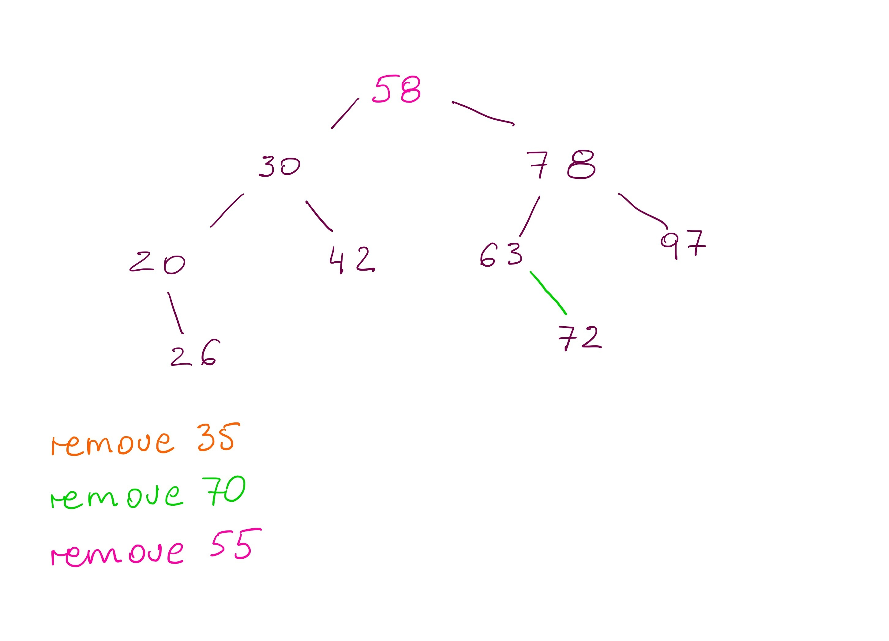 ] .center80[ To remove 55, we first locate it in the tree (that is easy) and then look for a value that could be used to be placed in that position without disturbing the order in the rest of the tree. To use 58, we replace the value of 55 with 58 and then __remove 58 from the right subtree__. ] --- ## `remove` from a BST There are three cases of removing a node from a BST: -- - removing a leaf: disconnect it from the tree by setting its parent's reference to `null` -- - removing a node with one child (one subtree): disconnect it from the tree by setting its parent's reference to point to its only child (left or right does not matter) -- - removing a node with two children (two subtrees): - find its inorder predecessor (or successor), - use that value to replace the value that we are removing - remove the value of the predecessor from the left subtree (or the value of the successor from the right subtree) -- ----- In the last case, we need to be able to find an inorder predecessor or an inorder successor of a given value. How can we do this? -- .left-column2[ ``` T getPredecessor ( BSTNode node ) BSTNode current = node.left while (current.right != null ) current = current.right return current.data ``` ] -- .right-column2[ ``` T getSuccessor ( BSTNode node ) BSTNode current = node.right while (current.left != null ) current = current.left return current.data ``` ] --- template:section # Examples and Things to Think About --- ## `min` and `max` for a BST Provide an algorithm that finds and returns the smallest and the largest value in a binary search tree. __Challenging:__ provide an algorithm that returns n'th smallest value. You can assume that n is smaller than the number of nodes in the tree. --- ## Iterative `find` We looked at a recursive algorithm for the find method. Can you implement an equivalent method iteratively? Do you need additional data structure to keep track of explored vs. unexplored branches? If so, which ones? If not, why not? --- ## Order of Adding Does the order in which we add values to a tree changes its final shape? For each of the ordering of the values, add them to an initially empty BST one by one: - 1, 2, 3, 4, 5, 6, 7, 8, 9, 10 - 6, 3, 1, 2, 4, 5, 8, 7, 9, 10 - 5, 1, 2, 3, 6, 7, 4, 8, 9, 10 Which of those trees are _better_? Why? --- ## Removing from a Tree .left-column2-small[.smaller[ Consider the tree on the right. For each of the following nodes specify which of the three procedures should be followed to remove the node from a tree (i.e., is it a leaf, node with one child or node with two children). - 87 - 80 - 45 - 60 - 90 - 35 - 25 - 70 ]] .right-column2-large[ ] .below-column2[.smaller[ Show the tree after removing those nodes. If the node has two children show both options: using predecessor and using successor values. __In all cases start from the original tree.__ ]] </optgroup>